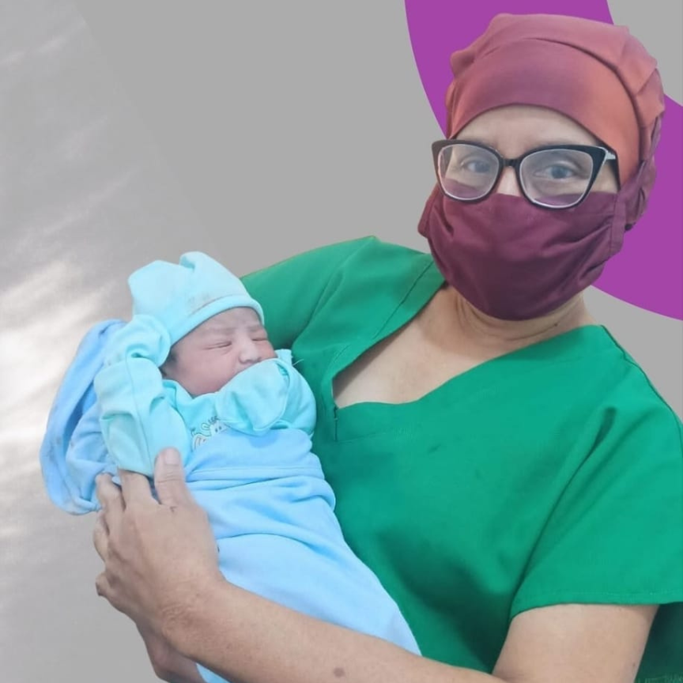
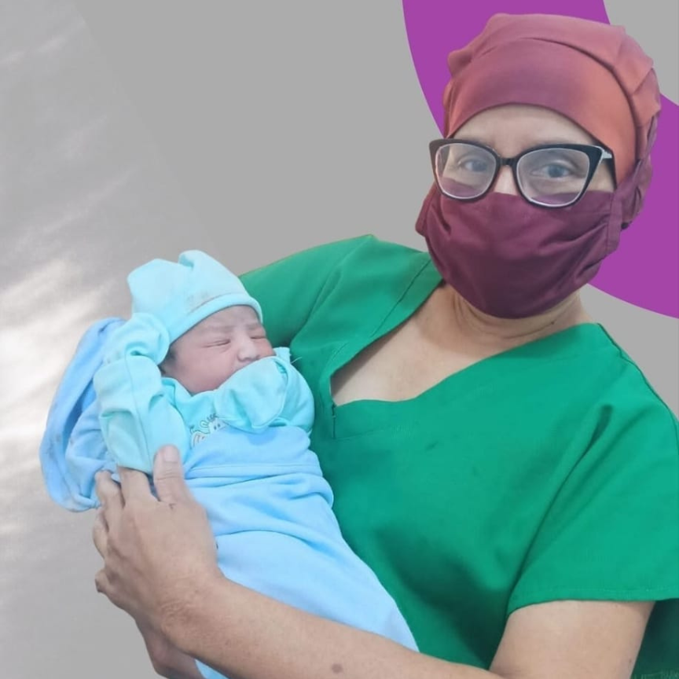

Sobre mí
Hola, soy la Dra. Luisa Colina, gineco-obstetra con más de 20 años de experiencia y una gran
pasión por estudiar y comprender a la mujer de manera integral en todas las etapas de su vida. A
lo largo de mi carrera, he invertido tiempo y esfuerzo en ampliar mis conocimientos, realizando
estudios especializados en endocrinología ginecológica y medicina materno-fetal, con el objetivo
de ofrecer una atención completa en cada una de estas etapas.
En mi práctica profesional, me he especializado en el cuidado de la salud de la mujer en todas
las etapas de su vida, desde la pubertad hasta la menopausia. Cuento con una amplia experiencia
en el manejo de diversas patologías que afectan a las mujeres, como la infertilidad, los
embarazos de bajo y alto riesgo, los trastornos del ciclo menstrual y la osteoporosis. Mi
enfoque se basa en ofrecer soluciones personalizadas y adecuadas para cada caso, reconociendo la
importancia de brindar una atención médica excepcional que mejore la calidad de vida de mis
pacientes y atienda todas sus necesidades relacionadas con la salud femenina.
 

Formación
- Universidad de Carabobo. Titulo medico Cirujano (1992)
- Universidad Central de Venezuela. Maternidad Concepcion Palacios. Especialista en Ginecologia y Obstetricia. (2002)
- Hospital Universitario de Caracas . Endocrinologia Ginecologica (2003)
- Universidad Central de Venezuela. Maternidad Concepcion Palacios. Medicna Materno Fetal (2004)
- Diplomado Internacional de Colposcopia y Patologia del Tracto Genital Inferior (2022). Ginecologia Perú
Formación adicional
- Docencia médica hospitalaria. Hospital General Esmeraldas Sur "Delfina Torres de Concha", Ecuador
- Ampliación de ecocardiología fetal. Sociedad Venezolana de Ecocardiología Fetal
- Salud Comunitaria. Universidad de Carabobo, Venezuela
- Curso propedeutico de obstetricia y ginecológica. Sociedad Venezolana de Obstetricia y Ginecología
- Extensión de técnicas quirurgicas. Universidad Central de Venezuela
- Diseño de proyectos de investigación. Universidad Central de Venezuela
- Capacitación pedagógica para profesionales no docentes. Universidad pedagógica Experimental Libertador